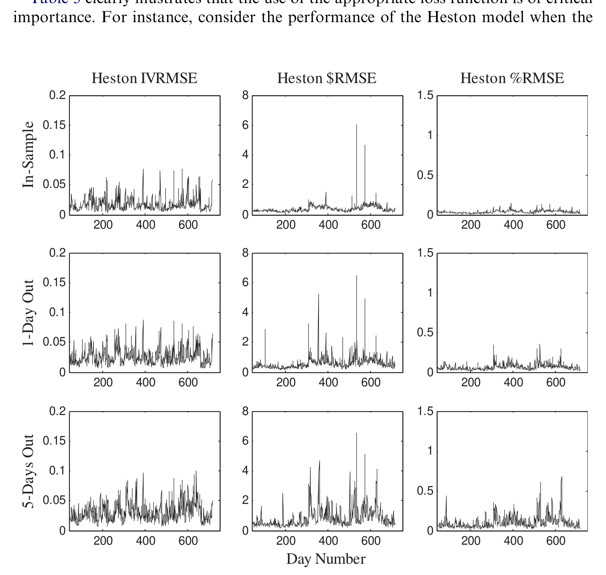
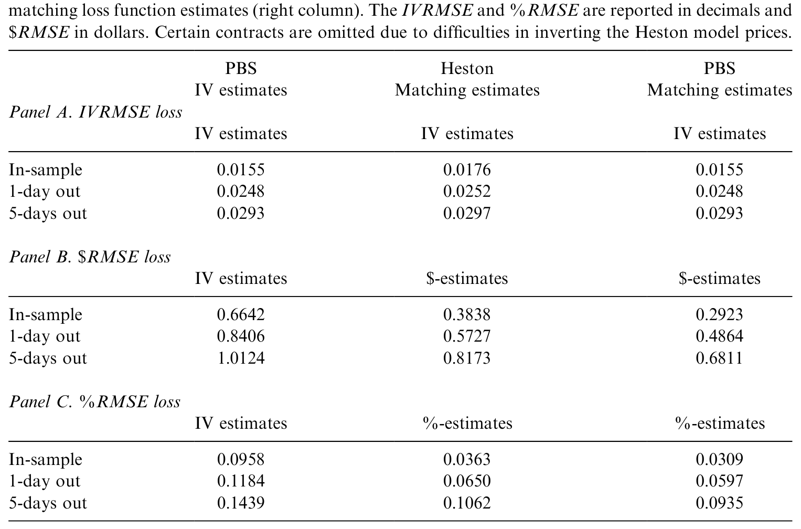
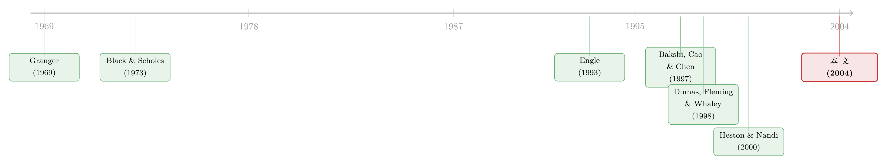

估的时候用一把尺，量的时候换另一把——损失函数如何「偷偷」改写了你的期权模型
本文读的是 Christoffersen & Jacobs (2004, Journal of Financial Economics)：在期权定价里，你「估参数」用的损失函数和「评模型」用的损失函数必须是同一把尺子——否则你拿到的参数对那把评价的尺子来说就是次优的。作者用最简单的 Practitioner Black-Scholes 模型在 S&P 500 期权上演示：把两端的损失函数对齐，评价损失能改善 50% 以上；而一旦对齐，这个被人当作「陪练」的模型，竟反过来打赢了结构化的随机波动率模型。
1 一桩没人在意的「公案」
先讲一个让人有点困惑的场景。
假设你是一位审稿人，手上有两篇关于期权定价的论文。第一篇（Dumas, Fleming, and Whaley, 1998，下称 DFW）告诉你：那个被业界称作「特设模型」（Ad-Hoc model）的简单做法——也就是本文要反复提到的 实务者布莱克-斯科尔斯模型 (Practitioner Black-Scholes, PBS)——表现相当不错，跟正经的确定性波动率模型比起来毫不逊色。第二篇（Heston and Nandi, 2000）却告诉你：同样这个 PBS 模型，被一个 GARCH 期权定价模型轻松超越。
同一个模型，两份相反的判决。你会怎么想？
最自然的反应是：大概是数据不同、样本不同、又或者结构模型本身确实更高明。但 Christoffersen 和 Jacobs 在这篇文章里给出的答案，要尖锐得多，也安静得多——问题根本不在模型，而在那把你用来量它的尺子。更准确地说，问题出在：人们在「估计参数」时用了一把尺子，在「评价模型」时却换了另一把。
这听上去像是一个技术细节。但作者想说的恰恰是：它一点都不是细节。它是模型设定本身。
2 损失函数，竟然就是模型本身
让我们从最基础的地方说起。
期权定价的实证研究里，怎么衡量一个模型「好不好」？最常见的，是看 美元均方误差 (dollar mean-squared error, \$MSE)，也就是模型价和市场价之差的平方的平均：
$$ \$\text{MSE}(\theta) \equiv \frac{1}{n}\sum_{i=1}^{n}\big(C_i - C_i(\theta)\big)^2, $$
这里 \(C_i\) 是市场上观察到的期权价格，\(C_i(\theta)\) 是模型在参数 \(\theta\) 下给出的价格，\(n\) 是合约数量。开个根号，误差就是「平均差几美元」，直观好懂。
但它有个毛病：贵的期权（深度实值、长到期）天然价格高、误差也高，于是在 \$MSE 里它们隐含地占了过大的权重。于是有人改用 相对（百分比）均方误差 (percentage MSE, \%MSE)：
$$ \%\text{MSE}(\theta) \equiv \frac{1}{n}\sum_{i=1}^{n}\Big(\big(C_i - C_i(\theta)\big)/C_i\Big)^2, $$
一块钱的误差，落在 50 美元的期权上和落在 5 美元的期权上，分量自然不该一样——从收益率的角度看，这更合理。还有人觉得，既然市场本来就用波动率在报价，那就该看 隐含波动率均方误差 (implied volatility MSE, IVMSE)：
$$ \text{IVMSE}(\theta) \equiv \frac{1}{n}\sum_{i=1}^{n}\big(\sigma_i - \sigma_i(\theta)\big)^2, $$
其中 \(\sigma_i = BS^{-1}(C_i, T_i, X_i, S_i, r_i)\) 是把市场价反演回去得到的 Black-Scholes 隐含波动率。
三把尺子，各有各的道理。到这里为止，绝大多数文献都把「选哪把尺子」当成一个估计精度的技术问题——挑一把能让参数估得最干净、最有效的就好，反正模型好不好是模型自己的事，跟尺子无关。
但真正关键的一步在于：这个「无关」的假设，是错的。
作者搬出了统计学里一句被反复证明、却在期权定价里被反复忽略的话（Granger, 1969；Engle, 1993）：改变损失函数，等价于改变模型设定。一个标准的期权定价模型只会吐出一个确定性的价格，它从来没告诉你误差项长什么样（Renault, 1997）。而你一旦选定了损失函数，你就隐含地替这个模型选定了误差结构——也就是说，你替它补完了「统计模型」的另一半。
于是结论顺理成章：如果你用 IVMSE 估参数、却用 \$MSE 来评价模型，你做的事情并不是「估好一个模型再换个角度考它」，而是先设定了一个模型、再偷偷把它换成另一个模型，却不允许参数跟着调整。常识告诉我们，要想在某把尺子下表现最好，就该用那把尺子去估。可正因为损失函数的后果不像「换个理论模型」那样显眼，这条常识在实证里被一忽再忽。
这正是全文反复敲打的那一个核心：损失函数不是评价工具，它是模型设定的一部分。 把它当成可以随意更换的「视角」，你就在不知不觉中比较着两个不同的模型。
3 用最朴素的模型，把话说透
要演示一个方法论上的道理，最好的载体不是花哨的模型，而是最朴素的那个。作者选了 PBS。
PBS 的实现只有三步，简单到近乎「作弊」：第一步，对每个观察到的期权算出 Black-Scholes 隐含波动率；第二步，把这些隐含波动率对到期时间 \(T\) 和执行价 \(X\) 的多项式做一个普通最小二乘 (ordinary least squares, OLS) 回归；第三步，把拟合出来的波动率再塞回 Black-Scholes 公式，得到「实务者价格」。DFW 用的最一般形式是：
$$ \sigma = \theta_0 + \theta_1 X + \theta_2 X^2 + \theta_3 T + \theta_4 T^2 + \theta_5 X T + \varepsilon_{IV}, $$
拟合值则是
$$ \sigma(\theta) = \theta_0 + \theta_1 X + \theta_2 X^2 + \theta_3 T + \theta_4 T^2 + \theta_5 X T. $$
注意看：用 OLS 去估这个回归，本质上就是在用 IVMSE 当损失函数。因为 OLS 解的恰恰是
$$ \theta_{IV} = \arg\min_{\theta}\ \text{IVMSE}(\theta) \equiv \arg\min_{\theta}\ \frac{1}{n}\sum_{i=1}^{n}\big(\sigma_i - \sigma_i(\theta)\big)^2 = (Z'Z)^{-1}Z'\sigma, $$
\(Z\) 是回归元矩阵。这一步线性、闭式、立等可取——这正是 PBS 受欢迎的原因。
接着，一个自然的问题是：拿到 \(\theta_{IV}\)，把它代回 Black-Scholes，得到的价格能直接当作市场价的好估计吗？写成误差结构的语言，IVMSE 隐含的模型是这样的：
看出问题了吗？误差 \(\varepsilon_{IV}\) 是加在波动率内部的，它要先经过 \(C^{BS}(\cdot)\) 这个非线性变换，才传导到美元价格上。OLS 能保证 \(E[\varepsilon_{IV}]=0\)，可正因为价格对波动率是非线性的，
$$ E[C] \neq C^{BS}\big(\sigma(\theta_{IV})\big). $$
也就是说，直接把 \(\sigma(\theta_{IV})\) 塞回 BS 公式，得到的是一个有偏的价格估计。可文献里偏偏就这么干，然后转头用 \$MSE 或 \%MSE 去评价它。
那正确的做法是什么？如果你最终要用 \$MSE 评价，就该用 非线性最小二乘 (nonlinear least squares, NLS) 直接去估：
$$ \theta_{\$} = \arg\min_{\theta}\ \$\text{MSE}(\theta) \equiv \arg\min_{\theta}\ \frac{1}{n}\sum_{i=1}^{n}\big(C_i - C_i^{BS}(\sigma_i(\theta))\big)^2. $$
这相当于把模型设定改成了
$$ C = C^{BS}\big(\sigma(\theta_{\$})\big) + \varepsilon_{\$}, $$
误差变成了可加的、同方差的。而如果你用的是 \%MSE，模型又变成了
$$ C = C^{BS}\big(\sigma(\theta_{\%})\big) + C\,\varepsilon_{\%}, $$
一个乘性的、异方差的误差结构。
请把这三个式子并排放在一起看：波动率的函数形式一模一样，可误差结构完全不同。这正是作者想钉死的那句话——三种损失函数，对应的是三个不同的模型，尽管它们都号称在估计同一个 PBS。用一把尺子估、另一把尺子评，结果在评价那把尺子下必然是次优的。
4 反转：被「公平对待」的陪练，赢了
道理讲完了，剩下的就是让数据说话。
作者用了一份非常标准的数据：S&P 500 指数欧式看涨期权，从 1988 年 6 月 1 日到 1991 年 5 月 31 日，共 755 个交易日、38,482 份合约（数据由 Gurdip Bakshi 慷慨提供，与 Bakshi et al., 1997 几乎相同）。S&P 500 期权是交投最活跃的欧式合约，且对股息和「股票-期权同步报价」都做了细致处理，很适合做这种方法论的演示。
做法是对 755 个横截面逐日重估：每天分别用 \(\\)$、\(\%\)、IV 三种损失函数估出 \(\theta_{t,\\)}$、\(\theta_{t,\%}\)、\(\theta_{t,IV}\)，再在样本内、样本外用不同损失函数评价。
第一个、也是最干脆的结论：把估计损失和评价损失对齐，评价损失能改善 50% 以上。换句话说，过去那个「先 OLS 估隐含波动率、再塞回 BS、然后用美元误差打分」的标准 PBS 实现，白白损失了一半以上的精度——不是因为模型差，而是因为它从来没有被「用对的尺子」估过。
但真正的反转在第二步。PBS 在文献里几乎总是被当作陪练（benchmark）：人们用 IVMSE（线性、方便）估它，然后拿一个用 \$MSE 估、又用 \$MSE 评的结构模型（比如 Heston 1993 的随机波动率模型）去跟它比。这场比试从一开始就不公平——结构模型用的是对齐的尺子，PBS 用的是错位的尺子。
那么，如果让 PBS 也用和结构模型相同的估计损失函数呢？作者把 PBS 和 Heston 模型放在同一把尺子下重估、重评（Heston 模型在大约 716 天上逐日估计），结果是：PBS 反过来打赢了标准的结构随机波动率模型，无论样本内还是样本外。
如图 3 所示，Heston 模型在三种估计损失下估出来的参数和表现差异显著——这本身就说明，「用哪把尺子估」对一个正经的结构模型同样是生死攸关的事，而不是 PBS 独有的毛病。

Figure 3: Heston’s stochastic volatility model is estimated daily using three different estimation loss
而把 Heston 模型在三种损失函数下的平均 RMSE 损失列出来对比（表 3），可以更清楚地看到：模型表现的排序，会随着你选的损失函数而改变。这恰恰印证了作者的第二个主张——比较模型时，估计损失函数必须在各模型之间保持一致，否则比的根本不是同一回事。

Table 3: presents average RMSE losses for the Heston model using the same 716
于是文章的三点贡献也就立住了：第一，实现期权模型时，对齐估计与评价损失至关重要（改善 50%+）；第二，跨模型比较时，估计损失必须统一；第三，作者顺手「公平地」重新实现了 PBS，造出了一个表现好得多的新 PBS——一个更难被打败的基准，留给未来的结构模型去挑战。
注意作者的措辞非常克制：他们说错位损失函数「可能」（may）导致问题，而非「必然」。没有定理保证「设定正确」的模型在样本外一定最优——样本外，一个设定有误、但参数估得很准的模型，完全可能打赢那个设定正确、参数却没对齐尺子的模型。所以「对齐损失函数」是一条经验法则（rule-of-thumb），它好不好用本身是个实证问题。
5 文献脉络
把这条线索拉直，会发现它其实横跨了两个看似无关的领域。
一端是期权定价模型的演进。源头当然是 Black and Scholes (1973)。为了修补 BS 的经验缺陷，确定性波动率函数（Derman & Kani, 1994；Dupire, 1994；Rubinstein, 1994）、随机波动率模型（Scott, 1987；Hull & White, 1987；Heston, 1993）、跳跃模型（Bates, 1996a）、以及离散时间的 GARCH 期权模型（Duan, 1995；Heston & Nandi, 2000）相继登场。Bakshi, Cao, and Chen (1997) 则做了一次集大成的实证横评。
另一端，是统计学里一条更古老、却被期权文献长期无视的暗线：损失函数即模型设定。Granger (1969) 最早指出预测应当用与最终用途一致的损失函数，Engle (1993)、Weiss & Andersen (1984)、Weiss (1996) 把这条思想打磨成形，Renault (1997) 则专门讨论了期权定价误差该如何建模。
这篇文章的位置，恰恰是把这两条线焊接在一起：它借用 DFW (1998) 提出的 PBS（Ad-Hoc）模型作为载体，又借 Berkowitz (2001) 为「频繁重估的 PBS 是某个未知结构模型的简约近似」提供的理论辩护，把统计学里「损失函数即模型」的洞见，第一次系统地砸进了期权定价的实证方法论。也正因如此，它顺带「平反」了 DFW 的乐观结论（PBS 实现得当不会变差），同时把 Heston & Nandi (2000)、Garcia et al. (2000) 那种「用错位尺子量陪练」的比较打上了问号。

顺带一提，这条「该用什么尺子量期权模型」的追问，后来一直没有停。关于「拿掉模型这把尺子、用无模型隐含波动率去审期权市场」的思路，可参见《拿掉那把叫「模型」的尺子，期权市场才被公正地审了一次》；而把结构模型「蒸馏」成查找表、从而绕开逐日重估之苦的现代做法，可参见《把结构模型「蒸馏」成一张查找表：深度代理与期权定价》。至于 PBS 赖以为生的那条「微笑/坏笑」曲线本身藏着什么，《为什么从期权里「读」出来的风险厌恶，会咧嘴一笑？》 给了另一个角度。
6 评论与延伸（Q&A + 研究方向）
(a) 几个可能的疑问
Q：这篇文章不就是「样本内拟合 vs 样本外预测」那个老问题的换皮吗？
不是。老问题问的是「用同一个准则，样本内拟合好不代表样本外好」；这篇问的是更前置的一件事：你在样本内用哪个准则去估参数。作者的点在于，估计准则一旦选定，就锁死了误差结构、也就锁死了模型本身。即便只看样本内，用 IVMSE 估出来的参数，在 \$MSE 下也是次优的——这跟样本外没关系，是同一时刻、同一批数据下的矛盾。
Q：那是不是说存在一把「最好」的损失函数，大家都该用它？
恰恰相反。作者明确表示他们不推荐任何特定的损失函数，只强调「一致性」。该用哪把尺子，取决于你拿这个模型干什么——对冲、投机、还是做市，目的不同，恰当的损失函数就不同。文章的规范主张是：先由用途定下评价损失，再用同一个损失去估计。
Q：把 IVMSE 换成 NLS 直接估 \$MSE，无非是把线性回归换成非线性优化，听起来只是「算得更费劲」而已？
计算上确实更费劲（线性闭式解变成逐日非线性优化），但概念上不止如此。关键在于那个不等式 \(E[C]\neq C^{BS}(\sigma(\theta_{IV}))\)：因为 BS 价格对波动率非线性，直接代入拟合波动率得到的是有偏的价格估计。NLS 不是为了「算得更准」，而是为了估一个不同的、与评价目标一致的模型。
Q：用 PBS 这种「特设」模型来讲道理，会不会以偏概全？真正的结构模型未必有这毛病。
作者特意演示了 Heston 模型在三种损失下估出来的参数和表现差异同样显著（见图 3、表 3），说明这绝非 PBS 独有。他们选 PBS 只是因为它简单、且是文献里的标准陪练；他们也声明并不主张用 PBS 取代结构模型，只是要求「公平地」实现它。
Q：既然 PBS「公平实现」后能赢结构模型，是不是说结构模型没用？
不能这么推。作者的结论很谨慎：对齐损失函数后，PBS 是一个更难被打败的基准，过去那些「PBS 输了」的比较因为尺子错位而站不住脚。这是在说「之前的比较不公平」，而不是「结构模型不行」。它把举证责任还给了未来的结构模型：你得在公平的尺子下赢。
Q：这套逻辑只适用于期权吗？
不。损失函数即模型设定的洞见来自一般的统计/预测文献（Granger, Engle, Weiss）。期权只是一个特别尖锐的场景——因为期权模型几乎从不为了某个结构参数本身而估，而是为了样本外的定价或对冲，所以「用途决定损失」的逻辑在这里格外刺眼。任何「估计准则 ≠ 评价准则」的实证场景都适用。
(b) 几个可能的研究问题与提案
1. 把「损失函数一致性」搬到公司债定价上
【经济故事】公司债的定价误差同样高度异方差：高收益债与投资级债的价格水平、流动性差异巨大，研究者在估信用利差模型（结构模型、简约模型）时用 \$ 误差，评价时却常换成收益率误差或利差误差。这正是本文批评的错位。
【可行性】高。所需数据 TRACE 成交价 + 债券特征齐备，识别上不需要外生冲击，只需在同一批债券上把估计损失与评价损失系统地配/错对照，复现「对齐改善多少」。难点是公司债的非同步成交和报价噪声，需要先处理「价格 vs 收益率」的非线性映射。
2. 损失函数错位会不会系统性地高估某类模型？
【经济故事】本文指出错位「可能」出问题，但没刻画朝哪个方向出问题。一个猜想是：用 IVMSE 估、\$MSE 评，会系统性地偏向某个到期/在值区间的合约，从而让某些模型「看起来」更好。把偏差的方向与合约特征挂钩，是一个干净的方法论问题。
【可行性】中。可用模拟（已知真实模型，制造错位）+ 实证（S&P 500 或个股期权）双管齐下。识别清楚，doable；难点是要把「偏差方向」与 moneyness/maturity 的交互讲成一个可检验的命题。
3. 外资持有人偏好与期权市场的「尺子选择」
【经济故事】不同投资者群体（做市商、对冲基金、外资机构）对应不同的用途，因而隐含不同的损失函数。如果能从持仓或成交数据反推出某类投资者「实际在用」哪把尺子，就能把抽象的损失函数选择和真实的市场参与者对应起来。
【可行性】低到中。思路新颖，但需要投资者层面的期权持仓/成交数据，可得性是硬约束；即便拿到，从行为反推损失函数也存在识别上的多重解。更现实的做法是先在做市商对冲误差数据上做一个缩小版。
4. 「公平基准」对既有期权实证结论的重估
【经济故事】本文造了一个更强的 PBS 基准。一个自然的后续是：把过去十几年里「结构模型打赢 PBS」的代表性论文，统一换成对齐损失函数后重做，看有多少结论会翻案。这是一次方法论驱动的「大复制」。
【可行性】中。数据多为公开或可复现，识别就是「同一把尺子重跑」，doable；工作量大、且需要逐篇还原原文的估计细节，属于费力但扎实的活儿。
7 我的判断
这篇文章的贡献，与其说是一个新模型，不如说是一记方法论上的当头棒喝：它把统计学里一条人尽皆知、却在期权定价里被集体无视的常识，用最朴素的模型、最标准的数据，演示得无可辩驳。「损失函数即模型设定」这句话，配上「对齐后改善 50%+」「公平实现后 PBS 反超结构模型」这两个干脆的实证结果，杀伤力十足。它的另一层价值在于「立基准」——把 PBS 从一个被随意handicap 的陪练，扶正成一个未来结构模型必须认真对待的对手。
但有几处值得保留。其一，作者自己也承认，「对齐损失函数」只是经验法则而非定理：样本外，一个设定有误但估得准的模型完全可能赢，所以「对齐必更好」并不普适，这一点的边界文章没有给出理论刻画。其二，演示集中在 PBS 与 Heston 两个模型、一段 1988–1991 的 S&P 500 数据上，时段不长、危机样本有限，结论能否推广到更动荡的市场（比如把跳跃、肥尾考虑进来后）仍是开放的。其三，全文几乎只在 \$、\%、IV 三把尺子里打转，而作者自己也指出，真正贴近用途的损失函数其实是对冲损失或投机损失——这恰恰是最有意思、却被搁置的那一类。
我最想看到的后续，是把这套「一致性」纪律推到那些真正以用途定义的损失函数上：如果一个交易台的目标是 delta 对冲的盈亏，那么用对冲误差去估参数、再用对冲误差去评价，会不会让模型排序再次洗牌？这才是「用途决定损失」这句口号的终极考场。
参考文献
- Bakshi, C., Cao, C., Chen, Z. (1997). Empirical performance of alternative option pricing models. Journal of Finance 52, 2003–2049.
- Bates, D. (1996a). Jumps and stochastic volatility: exchange rate processes implicit in Deutschemark options. Review of Financial Studies 9, 69–107.
- Berkowitz, J. (2001). Forecasting option prices with unobserved volatility and false models. Unpublished working paper, University of Houston.
- Black, F., Scholes, M. (1973). The pricing of options and corporate liabilities. Journal of Political Economy 81, 637–659.
- Christoffersen, P., Jacobs, K. (2004). The importance of the loss function in option valuation. Journal of Financial Economics 72(2), 291–318.
- Derman, E., Kani, I. (1994). Riding on the smile. Risk 7, 32–39.
- Duan, J. (1995). The GARCH option pricing model. Mathematical Finance 5, 13–32.
- Dumas, B., Fleming, F., Whaley, R. (1998). Implied volatility functions: empirical tests. Journal of Finance 53, 2059–2106.
- Dupire, B. (1994). Pricing with a smile. Risk 7, 18–20.
- Engle, R. (1993). A comment on Hendry and Clements on the limitations of comparing mean square forecast errors. Journal of Forecasting 12, 642–644.
- Garcia, R., Luger, R., Renault, E. (2000). Empirical assessment of an intertemporal option pricing model with latent variables. Unpublished working paper, Université de Montréal.
- Granger, C. (1969). Prediction with a generalized cost of error function. Operations Research Quarterly 20, 199–207.
- Heston, S. (1993). A closed-form solution for options with stochastic volatility with applications to bond and currency options. Review of Financial Studies 6, 327–343.
- Heston, S., Nandi, S. (2000). A closed-form GARCH option pricing model. Review of Financial Studies 13, 585–626.
- Hull, J., White, A. (1987). The pricing of options on assets with stochastic volatilities. Journal of Finance 42, 281–300.
- Renault, E. (1997). Econometric models of option pricing errors. In: Kreps, D., Wallis, K. (Eds.), Advances in Economics and Econometrics. Cambridge University Press, pp. 223–278.
- Rubinstein, M. (1994). Implied binomial trees. Journal of Finance 49, 771–818.
- Scott, L. (1987). Option pricing when the variance changes randomly: theory, estimators, and applications. Journal of Financial and Quantitative Analysis 22, 419–438.
- Weiss, A. (1996). Estimating time series models using the relevant loss function. Journal of Applied Econometrics 11, 539–560.
- Weiss, A., Andersen, A. (1984). Estimating time series models using the relevant forecast evaluation criterion. Journal of the Royal Statistical Society, Series A 147, 484–487.